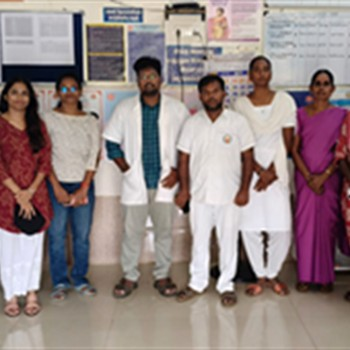
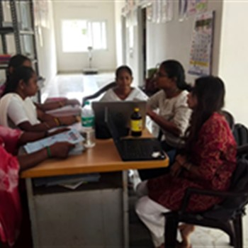
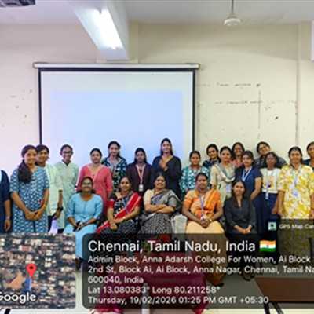
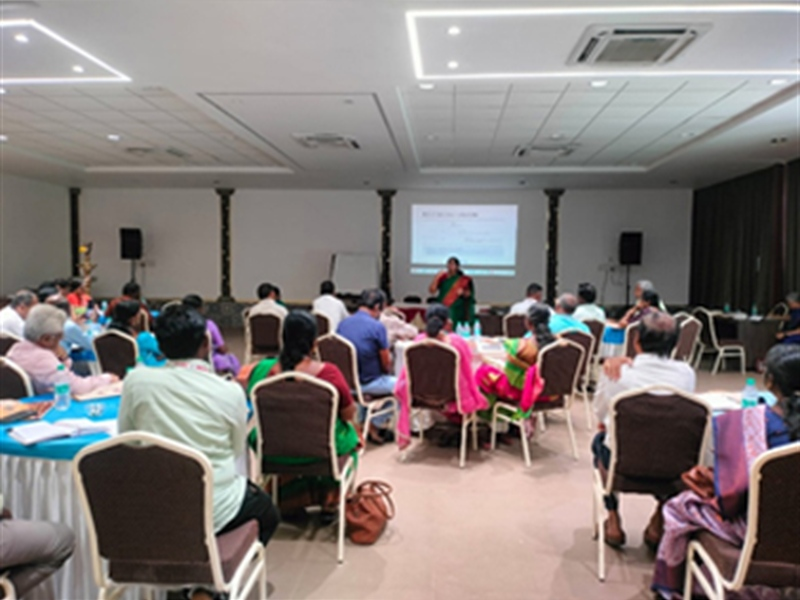

Loading


We support organisations in designing and conducting research and evaluation studies that address relevant questions, assess needs, and generate actionable evidence.
Develop study protocols, research questions, sampling strategies, and appropriate methodologies.
Identify gaps, priorities, service needs, and contextual factors to inform programme planning.
Establish benchmarks and assess changes at defined points during an intervention.
Examine programme relevance, implementation, outcomes, and impact.
Collect evidence through surveys, interviews, focus group discussions, and other suitable methods.
Develop data collection instruments and support fieldwork planning and implementation.
Typical Deliverables: Study Protocols, Research Tools, Fieldwork Plans, Datasets Where Agreed, and Research or Evaluation Reports.
We help organisations establish practical systems to track progress, assess results, identify implementation gaps, and use evidence to improve programmes.
Develop monitoring, evaluation and learning frameworks aligned with programme objectives and expected results.
Map how programme activities are expected to contribute to outputs, outcomes, and impact.
Define measurable indicators and establish systems for tracking programme performance.
Review implementation progress, identify challenges, and support timely corrective action.
Assess the completeness, accuracy, consistency, and reliability of programme data.
Organise performance information for routine review, accountability, and decision-making.
Typical Deliverables: MEL Plans, Results Frameworks, Indicator Reference Sheets, Data Quality Assessment Reports, Monitoring Reports, and Dashboards.
We support the data analysis process, from organising and validating datasets to applying suitable analytical methods and communicating findings.
Clean, organise, validate, and prepare datasets for analysis.
Apply appropriate statistical methods to examine patterns, relationships, differences, and outcomes.
Analyse interviews, focus group discussions, and other narrative data to identify themes and patterns.
Bring quantitative and qualitative findings together to address research questions.
Interpret results in relation to study objectives and programme context.
Present analytical findings through clear tables, charts, graphs, and other visual formats.
Typical Deliverables: Cleaned Datasets, Analysis Plans, Statistical Output Tables, Qualitative Coding Frameworks, Analytical Summaries, Charts, and Visualisations.
We provide scientific and technical writing support to researchers, academic institutions, and organisations throughout the research and publication process.
Prepare structured proposals and concept notes aligned with research objectives and funding requirements.
Draft, edit, and refine journal articles, narrative reviews, and other scholarly manuscripts.
Support literature searches, evidence synthesis, critical appraisal, and review writing.
Develop proposal narratives and supporting research documents for funding applications.
Prepare and review ethics submissions, participant information sheets, consent forms, and related documents.
Prepare abstracts, posters, presentations, and other materials for scientific meetings.
Typical Deliverables: Proposal Documents, Manuscript Drafts, Review Manuscripts, Grant Application Materials, Ethics Documents, Abstracts, Posters, and Presentations.

Translate evidence into accessible resources that organisations and communities can use.
Present research methods, findings, conclusions, and recommendations in a clear, structured format.
Document implementation experiences, outcomes, lessons learned, and promising practices.
Translate findings into concise, decision-oriented messages and recommendations.
Develop practical learning resources, standard operating procedures, and implementation guides.
Develop audience-appropriate educational and visual communication resources.
Typical Deliverables: Technical Reports, Case Studies, Policy Briefs, Manuals, Guidelines, and IEC Materials.

Strengthen the skills needed to apply evidence in research and programme work.
Build practical skills in research design, sampling, data collection, and study implementation.
Strengthen skills in statistical analysis, qualitative analysis, and interpretation.
Improve research writing, manuscript preparation, and publication skills.
Strengthen understanding of programme performance assessment and the use of evidence in planning and review.
Explore appropriate applications of artificial intelligence in research workflows.
Provide training tailored to organisational and individual learning needs.
Typical Deliverables: Training Presentations, Participant Resources, and Tailored Training Sessions.
Share your research question, programme requirement, data challenge, or training need with us. We can explore the right scope of support for your work.